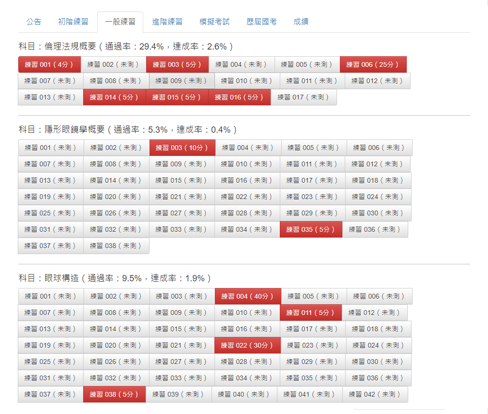
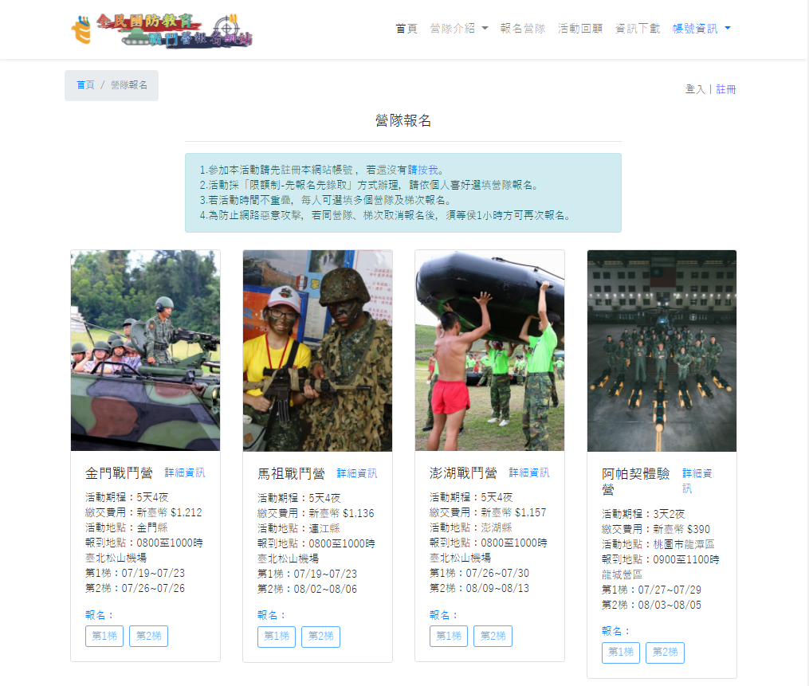

呂騰耀
關於我. Royx
網頁全端工程師 / 系統工程師 / 網路工程師
- 2001年因興趣開始研究木馬(Sub Seven)及觸資安，開啟了學習旅程，沿路接觸各種不同的領域，例如 Linux、網路攻防、資料庫設計、到現在的雲端網路服務 Saas 和一些程式設計輔助工具、docker、github。
- 早期投程式學習，在作品中有 C++ Builder 設計的單機版 RPG 遊戲、Perl 的網路爬蟲及自動自動化程式以及 Perl, Python C# 的網路攻擊程式。
- 最近幾年因對網站系統興趣濃厚，開始自我學習 PHP、並在學兩年後設計了第一個單位內的 「CMS 網站系統」，包括會員管理、內容管理、檔案管理、相簿管理、日誌等功能；接續也花費了一年左右的時間製作類似 Pintrest 的平台（同時間推出），但因功能及費用不及，此案也沒有成功。
- 曾開發過「文宣/影音共享平台」、「CMS 內容管理」、「考試學習」、「形象網站」類型的網站系統，由於內部網路及版權關係，無法呈現。
- 近三年開始接觸雲端服務後，也開始將網站系統搬移至雲端，使用過 AWS EC2 及 GCP VM, LB，目前 GCP 持續使用，目前正積尋求網站全端開發工作。
個人介紹
姓名: 呂騰耀
出生: 1981/6
居住: 新北市三重區
電子郵件:
ｚｕｉｎ＿ｒｏｙｘ＠ｈｏｔｍａｉｌ．ｃｏｍ
[ 能力 / 經驗 ]
網頁前端設計
HTML、CSS3、Bootstrap、Tailwindcss、Javascript、jQuery、AlpineJs
網頁後端設計
PHP、Laravel，會員管理、內容管理、影音壓縮處理、後台規劃
作業系統
Windows Desktop、Linux Server(Centos Debain)
資料庫
Mysql
雲端服務
Amazon Web Service, Google Cloud Platform(Load Balance)
相關證照
Ethical Hacker(道德駭客)、Linux RHCE(紅帽)、Linux RHCSA(紅帽)、網路封包分析 Class C
其他
Docker、Github、Microsoft Office、Photoshop、Vscode
履歷. Resume
[ 學習 / Learning ]
2000
資訊安全-木馬研究
經典 Sub Seven 特洛伊木馬測試與植入，了解病毒、蠕蟲與木馬功能及特性差異。
2001
2002
程式語言- C
學習所有程式的基礎 C，雖然是基礎，但過程很艱辛，畢竟 C 不適合初學者，但對程式架構及特型有所了解。
2004
2005
程式語言- C++
在 C 之後進入 C++ 的世界，比起 C，物件導向的語言在功能上比較容易結合，並且較能夠發現問題，在學習的第二年用 C++ Builder
制作出類似 天堂1 的單機遊戲，深入了解程式的觸發事件與系統架構的應用。
2007
2008
Windows 與 Linux 作業系統
開始進入 MIS 的工作，除了要排除 PC 的硬體問題、針對各種軟體或系統問題都要能夠排除修復；同時間開認識 Linux 的架構及功能，為何伺服器用
Linux 能夠帶來穩定與效能。
2010
2011
資安安全-安全管理師
隨著網路發達，網路安全日益重視，因此深入研究應如何應付各種攻擊手段，提升工作的防護力。
2011
2012
程式學習-PHP
因應網頁興起，開始學習 PHP程式設計、並在第二年獨立完成 CMS 網站（工作），並結合 ajax 技術，了解前端與後端的整合與應用。
2014
2015
程式學習-雲端服務與網站的結合
當時的伺服器幾乎都是硬體式，費用高，甚至需要專線來讓網路能夠跑得更順暢，而當代的雲端服務領頭羊 Amazon，發明了雲端網路服務 EC2
，大幅減少成本，提高可用度，但需要熟悉作業系統（Linux or Windows
Server），隨後也產生一系列的進階服務，只要台灣有會議教學，我幾乎都到議場聽講，目的就是將網頁系統與雲端服務緊密結合再一起。
2017
2018
程式學習-Laravel框架
隨著網站技術日益成長，框架已是必然之路，框架能減少開發風險（資安）、降低系統維護成本、高彈性及整合度，這些都是優勢未來競爭所需要，雖然重要，但也不可荒廢原生
PHP，因為她是母體。
2020
2021
程式學習-前/後端學習與整合
當今人手一機的智慧型手機，是每個人閒話家常的溝通媒介，此時網站定位顯得正重要、也將前端技術帶往更複雜的方向，意味著前端框架的之重要性不可忽視。
迄今
[ 認證 / Certificates ]
2010
Ethical Hacker(CEH)
國際道德駭客認證 藉由實際的各種攻擊手段了解網路攻擊防禦之道，從單機到網路、病毒到木馬、詐騙到社交攻擊。
2010
國際道德駭客認證 藉由實際的各種攻擊手段了解網路攻擊防禦之道，從單機到網路、病毒到木馬、詐騙到社交攻擊。
2013
封包分析 Class C 認證
RHCE 紅帽 系統工程師認證 藉由 Wireshark 軟體，擷取當前網路環境封包，分析所在硬體設備以及網路流量異常狀況。
2013
RHCE 紅帽 系統工程師認證 藉由 Wireshark 軟體，擷取當前網路環境封包，分析所在硬體設備以及網路流量異常狀況。
2015
RHCSA 紅帽 系統管理師認證
RHCE 紅帽 系統工程師認證 熟悉紅帽所發行的 Linux 版本（Centos, RedHat, Fedora）及於系統中架設多種服務，如 Web, Samba, FTP, Mail Server, Database, DNS, Router, Firewall ...。
2015
RHCE 紅帽 系統工程師認證 熟悉紅帽所發行的 Linux 版本（Centos, RedHat, Fedora）及於系統中架設多種服務，如 Web, Samba, FTP, Mail Server, Database, DNS, Router, Firewall ...。
作品. Profolio

驗光師考試系統

戰鬥營報名系統
 醫登美適鏡片
醫登美適鏡片
聯繫我. Contact Me
[ Talk To Me ]